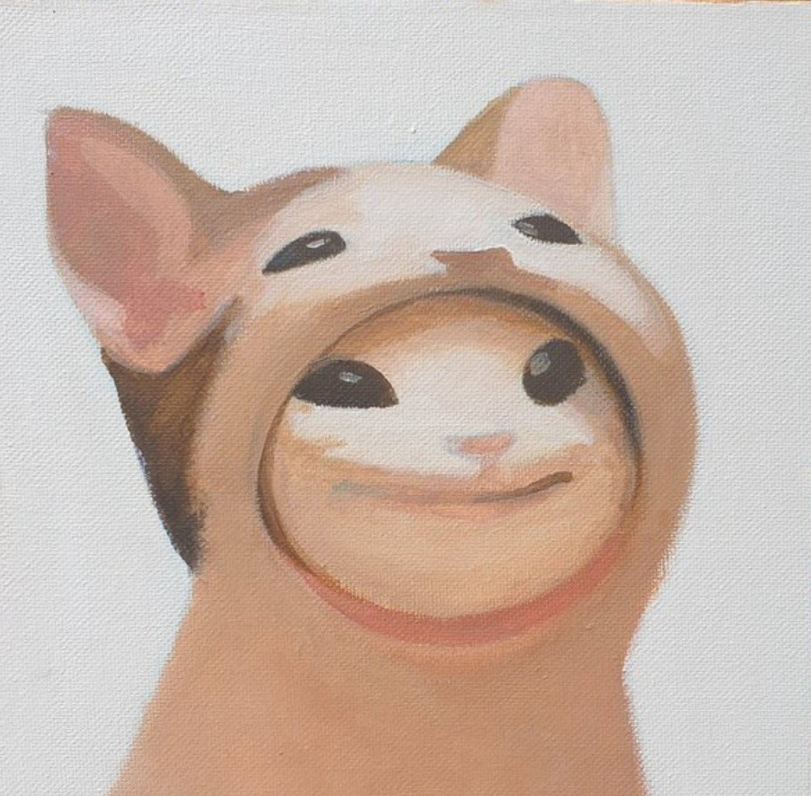

Hjem
Truls Iversen
Lene Olsen
Alex Dimopoulos
Marius Horni
Christoffer Staupe
Isak Galleberg
Hjem
Truls Iversen
Lene Olsen
Alex Dimopoulos
Marius Horni
Christoffer Staupe
Isak Galleberg

-Truls Iver M. Iversen
-Universitetet i Agder
-IT & informasjonssytemer
Jeg er 21 år og tar en bachelorgrad i kommunikasjon ved UIA. For å fullføre bachelorgraden min må jeg ta et breddeår det siste året mitt. Jeg valgte derfor å ta et år med IT & Informasjonssystemer. Jeg har stor interesse for fotografering og tar på meg noen små oppdrag her og der. Ellers når jeg har ledig tid, kan du finne meg se på en film, lese en bok eller spille spill.
Jeg vil si mitt største klima utslipp er gjennom bilen min. Bilen min bruker diesel og selv om den ikke bruker mer en 0,4 liter per mil er det fortsatt et stort utslipp når jeg kjører rundt 14000 km per år. Jeg har i derimot ikke noe utslipp gjennom fly etter som jeg ikke har flydd siden jeg var 15 år gammel. Jeg har også noe utslipp etter som jeg spiser kjøtt til middag ca. 3 dager i uka, pluss minus, kommer an på hva som frister. Jeg har aldri vært noe obs på mitt klimafottrykk, men bør kanskje fokusere mer på det framover

Bar-chart hentet fra ProgOblig2 etter ønsket fra oppgaven og har ikke noe samnheng med vår egen drøfting.